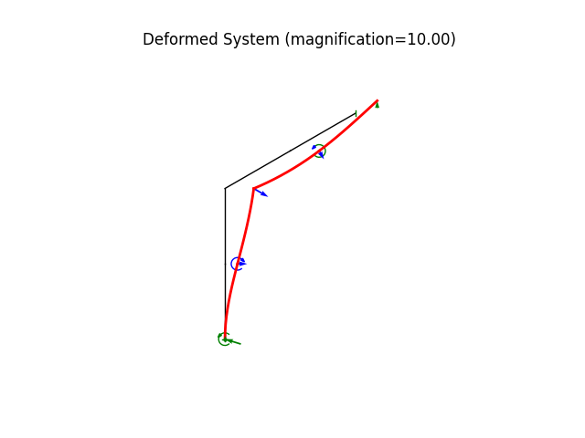
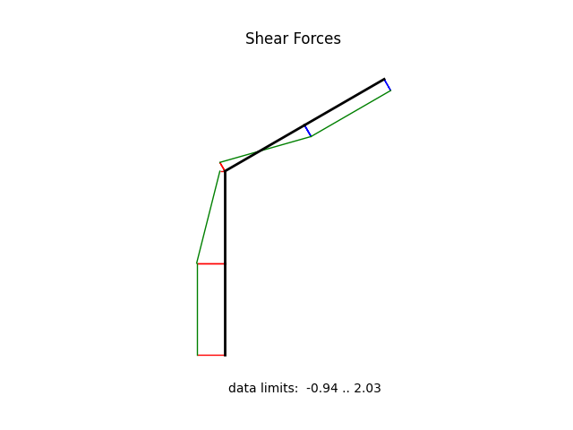

Note
Go to the end to download the full example code.
Frame with inclined support
modeled using * a linear 2D frame element * inclined boundary condition (using Transformation) * element loading
N = 8 |
number of elements |
L = 10.0 ft |
segment length |
MOE = 29000 ksi |
modulus of elasticity |
A = 1.04828 in^2 |
cross section area |
I = 5.5908 in^4 |
moment of inertia |
w = 0.333 * kip / ft |
applied lateral load |
Author: Peter Mackenzie-Helnwein
from random import betavariate
import numpy as np
from femedu.examples.Example import *
from femedu.domain import *
from femedu.solver import LinearSolver, NewtonRaphsonSolver
from femedu.elements.linear import Frame2D
from femedu.domain import Frame2dTransformation
from femedu.materials import ElasticSection
class ExampleFrame04(Example):
def createMesh(self, nelem=4):
"""
Creates a mesh using `nelem` elements for each of the straight segments.
"""
if (not isinstance(nelem, int)) or nelem % 4:
msg = "nelem must be an integer multiple of 4 (4,8,12,...)"
raise TypeError(msg)
# units
inch = 1
ft = 12 * inch
kip = 1
kips = kip
lb = kip / 1000
psi = lb / inch ** 2
ksi = kip / inch ** 2
degrees = np.pi / 180.
# problem parameters
MOE = 29000 * ksi
EI = 162133 * kips * inch ** 2
EA = 30400 * kips
L = 10 * ft
w0 = 0.333 * kip / ft
beta = 30.0 * degrees # slope of the upper support
#
# start meshing
#
s = np.linspace(0.0, 1.0, nelem // 2 + 1)
params = dict(
E = MOE,
A = EA/MOE,
I = EI/MOE,
)
material = ElasticSection(params)
# nodes
nodes = [ Node(0.0, si * L) for si in s]
nodes += [ Node(si * L * np.cos(np.radians(30.)), L + si * L * np.sin(np.radians(30.))) for si in s[1:]]
# elements
elements = [Frame2D(nodes[i], nodes[i+1], material) for i in range(nelem)]
# fixities
# ... the first node
nodes[0].fixDOF(['ux','uy','rz'])
# ... the last node
nvec = [np.cos(beta), np.sin(beta)] # vector parallel to the sliding plane of the upper support
transform = Frame2dTransformation(nvec) # an in-plane rotation
nodes[-1].addTransformation(transform) # defining a local frame for the last node
nodes[-1].fixDOF(['uy', ]) # fixing the LOCAL y-direction
# load the top half of the vertical member
# and the first half of the inclined member
for i in range(nelem//4, 3*nelem//4):
elements[i].setDistLoad(-w0)
return (nodes, elements)
def problem(self):
# initialize a system model
N = 4 # number of elements
# ========== setting global parameters ==============
target_load_level = 1.
# ========= build your structural model =============
model = System()
model.setSolver(NewtonRaphsonSolver())
# model.setSolver(LinearSolver())
nodes, elements = self.createMesh(N)
model.addNode(*nodes)
model.addElement(*elements)
# show model information
print(model)
print("\n==== perform the analysis ===\n")
# solve
model.setLoadFactor(target_load_level)
model.solve(verbose=True, max_steps=10)
#
# ==== create some nice plots ===
#
model.report()
model.plot(factor=10.0, filename="frame4_deformed.png", show_bc=1)
model.beamValuePlot("F", filename="frame4_force.png")
model.beamValuePlot("V", filename="frame4_shear.png")
model.beamValuePlot("M", filename="frame4_moment.png")
Run the example by creating an instance of the problem and executing it by calling Example.run()
if __name__ == "__main__":
ex = ExampleFrame04()
ex.run()
- 

- 

System object
Node_199(x=[0 0], u=None)
Node_200(x=[0 60], u=None)
Node_201(x=[0 120], u=None)
Node_202(x=[51.9615 150], u=None)
Node_203(x=[103.923 180], u=None)
Frame2D(Node_199, Node_200, ElasticSection(Material)({'E': 29000.0, 'A': 1.0482758620689656, 'I': 5.590793103448276, 'nu': 0.0, 'fy': 1e+30}))
Frame2D(Node_200, Node_201, ElasticSection(Material)({'E': 29000.0, 'A': 1.0482758620689656, 'I': 5.590793103448276, 'nu': 0.0, 'fy': 1e+30}))
Frame2D(Node_201, Node_202, ElasticSection(Material)({'E': 29000.0, 'A': 1.0482758620689656, 'I': 5.590793103448276, 'nu': 0.0, 'fy': 1e+30}))
Frame2D(Node_202, Node_203, ElasticSection(Material)({'E': 29000.0, 'A': 1.0482758620689656, 'I': 5.590793103448276, 'nu': 0.0, 'fy': 1e+30}))
==== perform the analysis ===
norm of the out-of-balance force: 1.1920e+01
norm of the out-of-balance force: 3.5089e-13
+
System Analysis Report
=======================
Nodes:
---------------------
Node_199:
x: [0.000 0.000]
fix: ['ux', 'uy', 'rz']
u: [0.000 0.000 0.000]
Node_200:
x: [0.000 60.000]
u: [1.001 -0.001 -0.026]
Node_201:
x: [0.000 120.000]
u: [2.294 -0.002 -0.013]
Node_202:
x: [51.962 150.000]
u: [2.296 -0.007 0.012]
Node_203:
x: [103.923 180.000]
local: x=[0.866 0.500], y=[-0.500 0.866]
fix: ['uy']
u: [1.719 0.993 0.023]
Elements:
---------------------
Frame2D_309: nodes ( Node_199 Node_200 )
material: ElasticSection
internal forces: f0=-0.63 V0=2.03 M0=-130.69 fl=-0.63 Vl=2.03 Ml=-9.01 Pw=0.00 Mw=0.00
Frame2D_310: nodes ( Node_200 Node_201 )
material: ElasticSection
internal forces: f0=-0.63 V0=1.20 M0=-0.69 fl=-0.63 Vl=1.20 Ml=71.05 Pw=-0.83 Mw=-8.33
Frame2D_311: nodes ( Node_201 Node_202 )
material: ElasticSection
internal forces: f0=0.00 V0=-0.11 M0=71.05 fl=0.00 Vl=-0.11 Ml=64.66 Pw=-0.83 Mw=-8.33
Frame2D_312: nodes ( Node_202 Node_203 )
material: ElasticSection
internal forces: f0=0.00 V0=-0.94 M0=56.34 fl=0.00 Vl=-0.94 Ml=0.00 Pw=0.00 Mw=0.00
Total running time of the script: (0 minutes 0.093 seconds)